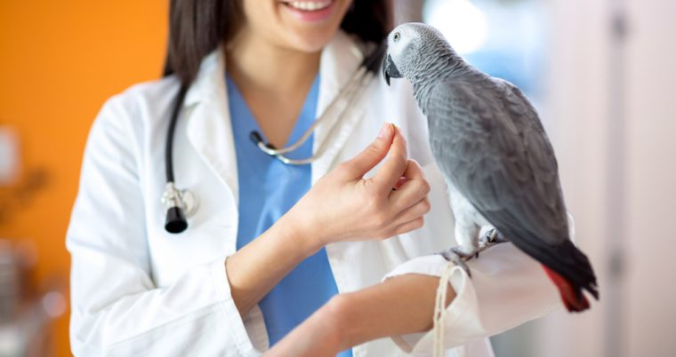
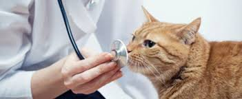
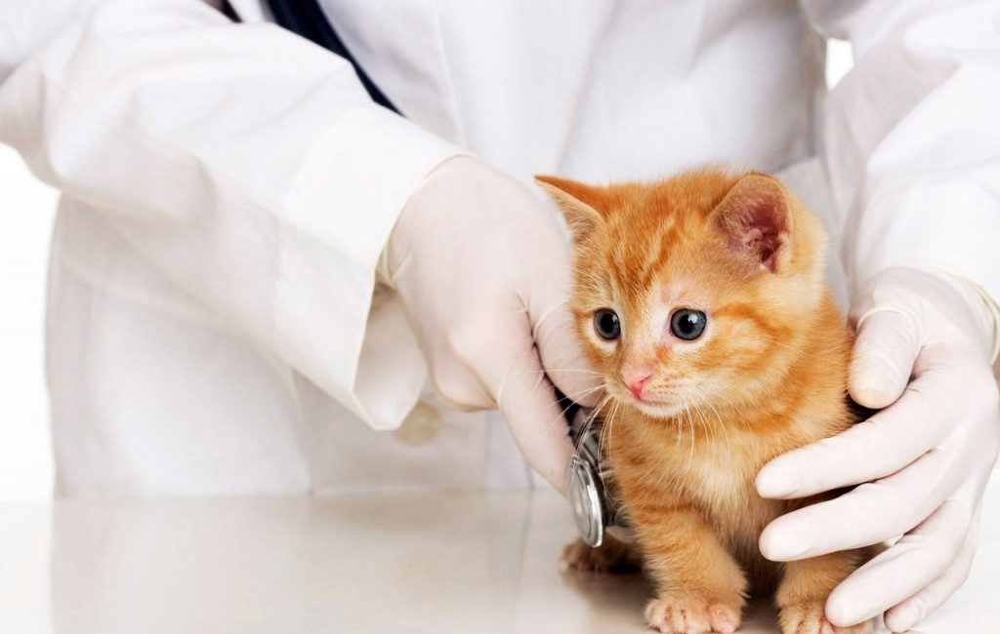
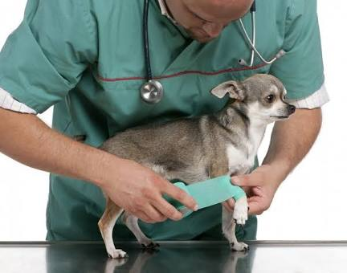
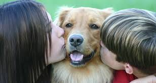

Variety of heartworm, deworming and flea/tick
prevention with in-house and manufacturer rebates.
Senior citizen and multi-pet discounts available.
Full bloodwork and urinalysis testing available.
Digital Radiography (X-Ray)

We upgraded our radiograph machine to not only to improve the safety for our
pets and staff, but to improve the quality of the pictures taken.
The quality of the images now allows our doctors to improve diagnosis without retaking
the image. By not using traditional film, we also are able to exchange images with
our local referral center better and eliminate the need for chemical processing which
is better for the environment. We have also added digital radiography to
diagnosis dental abnormalities like never before.
Holistic Medicine

Tui-na: This ancient Chinese therapy uses veterinary massage in the
treatment of various medical conditions which affect your pets. Many of these
techniques can be done by you at home.
Chinese herbal therapy: We are partnered with the foremost quality
Chinese herbal supplier (Jin-Tang) for the treatment of various medical conditions.
Essential Oil therapy: The quality essential oils of Young Living can
aid in the treatment of various conditions our furry loved ones suffer from.
In-Clinic Lab

By the use of our in-clinic lab equipment, our staff can provide results
faster to prevent delays in the treatment of the pets we are
entrusted to care for.
After collecting the blood, our certified veterinary technicians and veterinary assistants can perform CBCs (white and red blood cell analysis),
chemical panels (Liver, Kidney, Protein, Pancreatic, Thyroid, Phenobarbital and Electrolyte levels) and Sedi-vue for urinalysis testing to provide our veterinarians the information needed to start the recommended treatment plan as quickly as possible. The use of a reference lab
for more specialized tests can help to complete the remainder of the lab picture.
Ultrasound

Our ultrasound machine is used to improve our diagnostic abilities. Ultrasound
is a means of seeing what lies beneath the surface by sending sound waves into it
and creating an image that represents the way the waves bounce off the organs.
This is a non-invasive way to image your pet's internal organs and is used for
many purposes including: pregnancy, biopsy and urine collection, cancer staging,
fluid and solid organ analysis of the chest or belly. We also are able to exchange
the video/images with our local referral center though our radiograph computer.
Pet Ownership

We take the animals living on the street, we care for them, and we ensure
that our volunteer customers take ownership without money.